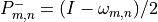
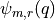

3D Modularity Revisited Documentation
This document describes all functions implemented in the 3d_modularity_revisited.sage module.
This module contains functions for computing Weil representations and related modular forms for 3D modularity. The functions implement mathematical objects used in the study of mock theta functions and their modular properties.
Key components:
Weil representation matrices and projectors
False theta series and mock theta functions
Indefinite theta functions
Ramanujan’s order 7 mock theta functions
Mathematical background: These functions implement results from algebraic number theory and modular forms, particularly focused on Weil representations of quadratic forms and their applications to mock theta functions.
Weil Representation Functions
- 3d_modularity_revisited.omega(m, n)
Compute the matrix of the Weil representation.
This function constructs a fundamental matrix in the Weil representation that encodes the action of certain transformations on theta functions.
- Parameters:
m (int) – Primary modulus parameter
n (int) – Secondary modulus parameter, must divide m
- Returns:
A matrix representing
- Return type:
Matrix
Mathematical Reference: See [1] around equation (2.35) for mathematical details.
Notes: The matrix entries are determined by congruence conditions: if and , otherwise .
- 3d_modularity_revisited.p_plus(m, n)
Compute the positive projection matrix of the Weil representation.
This projector extracts the ‘+1 eigenspace’ of the omega matrix, which corresponds to certain symmetries in the theta functions.
- Parameters:
m (int) – Primary modulus parameter
n (int) – Secondary modulus parameter
- Returns:
The positive projection matrix
- Return type:
Matrix
Mathematical Reference: See [1] around equation (2.36) for details.
- 3d_modularity_revisited.p_minus(m, n)
Compute the negative projection matrix of the Weil representation.
This projector extracts the ‘-1 eigenspace’ of the omega matrix, which corresponds to antisymmetric components in the theta functions.
- Parameters:
m (int) – Primary modulus parameter
n (int) – Secondary modulus parameter
- Returns:
The negative projection matrix 
- Return type:
Matrix
Mathematical Reference: See [1] around equation (2.36) for details.
- 3d_modularity_revisited.weil_projector(m, K, irrep=True)
Compute the complete projector for the Weil representation for subset K.
This function constructs the main projector by composing positive projections for each element in K, followed by optional irreducible representation adjustments and a final negative projection.
- Parameters:
m (int) – Primary modulus parameter
K (List[int]) – Subset of divisors to project onto
irrep (bool) – Whether to apply irreducible representation corrections
- Returns:
The complete Weil projector matrix
- Return type:
np.ndarray
Mathematical Reference: See [1] around equation (2.39) for details.
Algorithm:
Start with identity matrix
Apply positive projections for each n in K
If irrep=True, apply corrections for square divisors
Apply final negative projection
- 3d_modularity_revisited.weil_reps(m, K, irrep=True)
Extract Weil representation data from the projector.
This function computes the projector and extracts the non-zero components along with their signs, identifying the irreducible representations.
- Parameters:
m (int) – Primary modulus parameter
K (List[int]) – Subset of divisors
irrep (bool) – Whether to use irreducible representation
- Returns:
Tuple containing list of index lists for each representation and list of sign lists for each representation
- Return type:
Tuple[List[List[int]], List[List[int]]]
Notes: This function identifies unique representations by finding rows of the projector with non-zero entries and extracting their support and signs.
Theta Series Functions
- 3d_modularity_revisited.false_theta(m, r, max_n, q=var('q'))
Compute the false theta series .
False theta series are q-series that appear in the study of mock theta functions and have applications in partition theory and modular forms.
- Parameters:
m (int) – Modulus parameter
r (int) – Residue class parameter
max_n (int) – Maximum summation index (series truncated at ±max_n)
q (SymbolicExpression) – Formal variable (default: var(“q”))
- Returns:
The false theta series
- Return type:
SymbolicExpression
Notes: The ‘round(sign(k))’ gives 0 for k=0, ±1 for k≠0, which differs from the standard sign function that gives 0 for k=0.
- 3d_modularity_revisited.Psi(m, r, max_n, q=var('q'))
Compute the Psi theta series (alternative form).
This is similar to false_theta but uses the standard sign function instead of the rounded version.
- Parameters:
m (int) – Modulus parameter
r (int) – Residue class parameter
max_n (int) – Maximum summation index
q (SymbolicExpression) – Formal variable
- Returns:
The Psi series
- Return type:
SymbolicExpression
- 3d_modularity_revisited.unary_theta(m, r, max_n, q=var('q'))
Compute the unary theta series (weighted by coefficients).
This is a variant of the theta series where terms are weighted by their coefficient values rather than just signs.
- Parameters:
m (int) – Modulus parameter
r (int) – Residue class parameter
max_n (int) – Maximum summation index
q (SymbolicExpression) – Formal variable
- Returns:
The unary theta series
- Return type:
SymbolicExpression
- 3d_modularity_revisited.indefinite_theta(A, a, b, c1, c2, n_max)
Compute indefinite theta functions.
Indefinite theta functions are generalizations of classical theta functions to indefinite quadratic forms, important in the theory of mock theta functions.
- Parameters:
A (Matrix) – Quadratic form matrix (typically 2×2)
a (Vector) – Translation vector
b (Vector) – Phase vector
c1 (Vector) – First sign vector for rho function
c2 (Vector) – Second sign vector for rho function
n_max (int) – Maximum summation range
- Returns:
The indefinite theta function
- Return type:
SymbolicExpression
Notes: The rho function provides the signing that makes the series convergent despite the indefinite form.
- 3d_modularity_revisited.zhat_indefinite_theta(p, x, r, chi, n_max=10, nu=[0, 0, 0], c2=None)
Compute the Z-hat indefinite theta function.
This is a specialized indefinite theta function that appears in the study of mock theta functions and their modular transformation properties.
- Parameters:
p (List[int]) – List of three prime parameters
x (int) – Primary modular parameter
r (int) – Ramanujan parameter
chi (int) – Character parameter
n_max (int) – Maximum summation range (default: 10)
nu (List[int]) – Perturbation parameters (default: [0,0,0])
c2 (Optional[Vector]) – Optional second sign vector
- Returns:
The normalized Z-hat function as a power series
- Return type:
PowerSeries
Notes: This function computes a ratio of indefinite theta functions normalized by a Ramanujan theta function, which yields modular objects related to mock theta functions.
- 3d_modularity_revisited.ramanujan_theta(x, chi, n_max)
Compute Ramanujan’s theta function.
This is a classical theta function that appears in the normalization of various mock theta functions and modular forms.
- Parameters:
x (int) – Modular parameter
chi (int) – Character parameter
n_max (int) – Maximum summation range
- Returns:
The Ramanujan theta function
- Return type:
SymbolicExpression
Notes: This function is closely related to classical Jacobi theta functions and provides the modular framework for understanding mock theta functions.
Ramanujan Mock Theta Functions
- 3d_modularity_revisited.F0(prec)
Compute Ramanujan’s order 7 mock theta function F0(q).
F0 is one of Ramanujan’s third-order mock theta functions, which exhibit modular-like transformation properties but are not quite modular forms.
- Parameters:
prec (int) – Precision (maximum power of q to compute)
- Returns:
- Return type:
PowerSeries
Mathematical Definition: where is the q-Pochhammer symbol.
Notes: The series is truncated based on the constraint to ensure all computed terms are within the desired precision.
- 3d_modularity_revisited.F1(prec)
Compute Ramanujan’s order 7 mock theta function F1(q).
- Parameters:
prec (int) – Precision (maximum power of q to compute)
- Returns:
- Return type:
PowerSeries
Mathematical Definition:
- 3d_modularity_revisited.F2(prec)
Compute Ramanujan’s order 7 mock theta function F2(q).
- Parameters:
prec (int) – Precision (maximum power of q to compute)
- Returns:
- Return type:
PowerSeries
Mathematical Definition:
Utility Functions
- 3d_modularity_revisited.format_expansion(expansion, order=20)
Format a power series expansion for improved readability.
This function normalizes a power series by factoring out the leading term and presenting it in a more readable form.
- Parameters:
expansion (PowerSeries) – The power series to format
order (int) – Order for series expansion (default: 20)
- Returns:
Formatted expansion as leading_coeff * q^leading_power * (normalized_series)
- Return type:
PowerSeries
Notes: The function extracts the first coefficient and power, then factors them out to present the series in normalized form.
- 3d_modularity_revisited.P_poly(n, p, b)
Load precomputed P polynomial for given parameters.
P polynomials are special polynomials that appear in the study of mock theta functions and their modular properties.
- Parameters:
n (int) – Primary parameter
p (int) – Secondary parameter
b (int) – Tertiary parameter
- Returns:
The P polynomial value
- Return type:
Union[int, SymbolicExpression]
- Raises:
ValueError – If polynomial with specified parameters is not found
Notes: Returns 1 for trivial cases (n < 2 or p = 0). For other cases, looks up precomputed values from the pandas DataFrame.
References
[1] Cheng Et Al. 3D Modularity Revisited